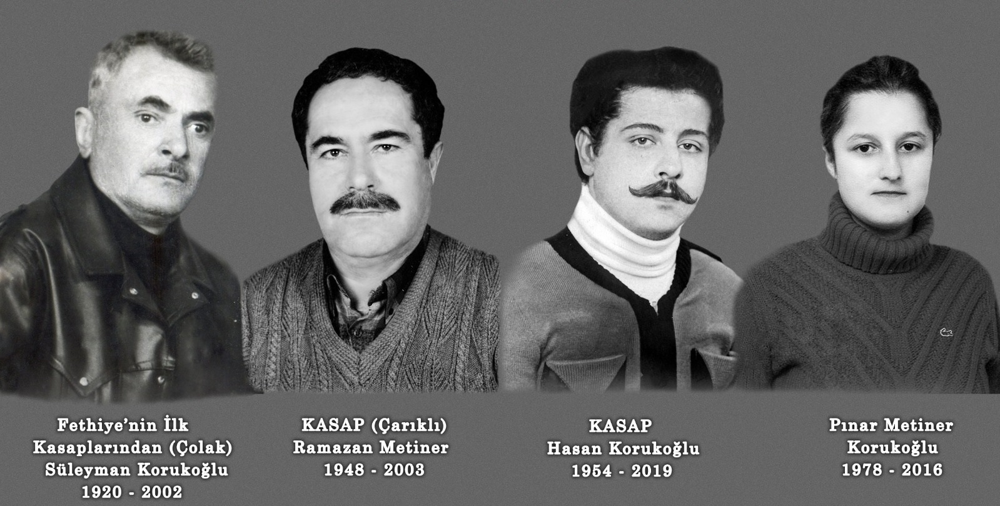

Çarıklı Et Restaurantı; eşsiz Kordon manzarası, sıcacık atmosferi ve tarifsiz lezzetleriyle genç yaşlı demeden tüm Fethiye’nin yıllardır buluşma noktası. 1982’de çıktığımız bu yolda zaman değişti Çarıklı ailesi olarak biz de değiştik. Çok güvendiğimiz kırmızı et lezzetlerimizin yanına binlerce şarap ve onlarca kokteyl alternatifi ekledik. Siz daha çok hikaye paylaşın, yeni arkadaşlar edinin, birlikte daha keyifli vakit geçirin diye kabuk değiştirdik ve yenilendik. Çarıklı Et Restaurantı artık bir restauranttan çok daha fazlası… Burası artık Fethiye’nin En Lezzetli Sosyal Ağı.

Hakkımızda
Adres: Cahit Gündüz Caddesi No:11 İkinci Etap Sahil Bandı, Fethiye, Muğla
Telefon: +90 252 614 31 24
Hakkımızda
1982’den Beri
Adres: Cahit Gündüz Caddesi No:11 İkinci Etap Sahil Bandı,
Fethiye, Muğla
Telefon: +90 252 614 31 24
Email: info@carikli.com.tr